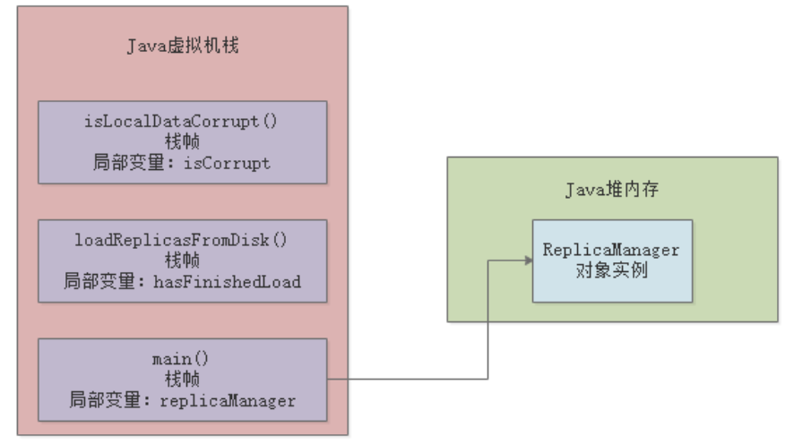

JVM基础（2）——JVM内存模型
一、简介
JVM会加载类到内存中，所以 JVM 中必然会有一块内存区域来存放我们写的那些类。Java中有类对象、普通对象、本地变量、方法信息等等各种对象信息，所以JVM会对内存区域进行划分：

JDK1.8及以后，上图中的方法区变成了Metaspace——元数据区。
我们本章的目的，就是介绍JVM中各块内存区域的功能，其中都是存放的哪些java对象信息。
二、方法区
方法区只存在于JDK1.8以前的版本，主要是存储从”.class“文件里加载进来的类，包括类的名称、方法信息、字段信息、静态变量、常量以及编译器编译后的代码等。从JDK1.8开始，这块区域的名字改成了元数据区（Metaspace），元数据区直接使用本地内存。
默认情况下，元数据区会根据使用情况动态调整，避免了在JDK1.8以前由于加载类过多从而出现 java.lang.OutOfMemoryError: PermGen。但也不能无限扩展，因此可以使用 -XX:MaxMetaspaceSize来控制最大内存。
以上一章的示例来看，Kafka.class和ReplicaManager.class加载到JVM后，会放到方法区中：
public class Kafka {
public static void main(String[] args) {
ReplicaManager manager = new ReplicaManager();
}
}
方法区/元数据区是所有线程共享的：

三、程序计数器
程序计数器，用来记录当前线程正在执行的字节码指令。我们还是继续以上一章的代码作为示例来讲解：
public class Kafka {
public static void main(String[] args) {
ReplicaManager manager = new ReplicaManager();
manager.loadReplicaFromDisk();
}
}
首先，上面这段.java源程序会被编译成.class文件，.class中存放的是JVM可以读懂的字节码，比如下面这样
public java.lang.String getName();
descriptor: ()Ljava/lang/String;
flags: ACC_PUBLIC
Code:
stack=1, locals=1, args_size=1
0: aload_0
1: get_field #2
4: areturn
当JVM加载类信息到内存之后，实际就会使用自己的字节码执行引擎，去执行这些字节码指令，如下图：
程序计数器的作用就在这里，它会记录当前执行的字节码指令的位置，如下图：
程序计数器是线程私有的，也就是说每个线程都有个自己的程序计数器，记录当前线程执行到了哪一条字节码指令：
四、Java虚拟机栈
Java虚拟机栈，其实是一种表示Java方法执行的数据结构。每个方法被执行的时候，都会创建一个栈帧（Stack Frame）用于存储局部变量表、操作栈、动作链接、方法出口等信息。每个方法从被调用到执行完成的过程，其实就是一个栈帧在虚拟机栈中从入栈到出栈的过程。
下面的这段程序，肯定有一个main线程来执行main()方法里面的代码，方法内部我们通常会定义一些局部变量，比如manager，JVM中必须有一块区域来保存方法中的这些数据，这个就是Java虚拟机栈，Java虚拟机栈是线程私有的。
public class Kafka {
public static void main(String[] args) {
ReplicaManager manager = new ReplicaManager();
manager.loadReplicaFromDisk();
}
}
public class ReplicaManager {
public static void loadReplicaFromDisk() {
Boolean hashFinishedLoad = false;
}
}
比如main线程执行了main()方法，那么就会创建一个栈帧（里面存放manager局部变量），并将其压入main线程自己的Java虚拟机栈中，如下图：
然后main线程继续执行loadReplicaFromDisk方法，遇到方法内部的hashFinishedLoad局部变量，就会再创建一个栈帧，压入自己的虚拟机栈中：
上述就是JVM中的”Java虚拟机栈“这个组件的作用：调用任何方法时，为方法创建栈帧然后入栈，栈帧里存放了这个方法对应的局部变量之类的数据（也包括方法执行的其它相关信息），方法执行完毕后就出栈。
五、Java堆内存
Java堆内存，这是JVM内存区域中最重要的一块区域，存放着各种Java对象，是线程共享区域。
下面代码中，new ReplicaManager()创建了一个对象实例，这个对象实例的相关信息就存放在Java堆内存中：
public class Kafka {
public static void main(String[] args) {
ReplicaManager manager = new ReplicaManager();
manager.loadReplicaFromDisk();
}
}
main线程在执行main()方法时，会为其创建一个栈帧并入栈，栈帧中的局部变量manager存放着ReplicaManager对象实例在Java堆内存中的地址：

六、本地方法栈
本地方法栈，其作用和Java虚拟机栈类似，区别在于本地方法栈是为虚拟机所使用到的Native方法服务，而Java虚拟机栈为虚拟机执行Java方法(也就是字节码)服务。本地方法栈也是线程私有的。
JDK中的很多底层API，比如IO、NIO、网络等，如果大家去看它的源码，会发现很多地方是调用的native修饰的方法，比如下面这样：
public native int hashCode();
在调用native方法时，也会有线程对应的栈来保存native方法底层用到的局部变量表之类的信息，这就是本地方法栈的作用。
七、总结
本章，我们通过代码的执行流程讲解了JVM的内存模型，读者需要重点关注方法区、程序计数器、Java虚拟机栈、Java堆内存与程序执行逻辑的关系，其中Java堆内存是我们后面章节要关注的重点区域。